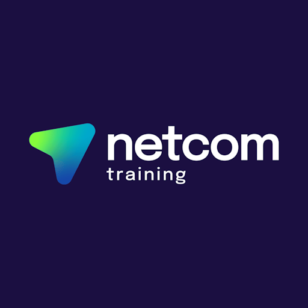

Welcome
Hello, I'm Antonio Gabriele Rizzo.
I am an IT Support Technician with a growing specialisation in Microsoft 365, Microsoft Entra ID, Exchange Online and Microsoft Intune.
This website documents my professional journey into Information Technology and showcases the practical projects, technical knowledge and hands-on experience that support my career transition.
My Journey
Where It All Began
My interest in technology began long before cloud computing, smartphones and the Internet became part of everyday life.
My first computer was a Commodore 16. Unlike many people of my generation who mainly used their computers for entertainment, I was fascinated by understanding how they worked. Instead of simply enjoying the software available, I wanted to create my own.
I began learning BASIC 3.5, writing simple programs and experimenting with my own games and small applications. Although they were modest projects, they introduced me to programming, logical thinking and the satisfaction of solving problems through code.
That curiosity naturally expanded into electronics, computers and understanding how technology worked. I spent countless hours designing, building and repairing electronic circuits, as well as assembling, upgrading and troubleshooting computers.
By the time I completed secondary school, I had already decided that I wanted to build a career in Information Technology.
Choosing a Different Path
In 1993, when the time came to choose my university course, Information Technology was very different from the thriving industry we know today. Personal computers were still relatively uncommon, the Internet was in its infancy and careers in IT were far less established.
My parents encouraged me to pursue a different profession that they believed would provide greater long-term stability. Following their advice, I chose a different academic path, eventually leading me into healthcare.
A Career in Healthcare
By the time I began studying Physiotherapy, my career path had already been established. Over the following years I built a rewarding career within the NHS, developing communication, teamwork and problem-solving skills that continue to support me in IT today.
Technology Never Left
Although my professional career developed in healthcare, my passion for technology never faded. I continued programming personal projects, designing and repairing electronic circuits, building and upgrading computers, troubleshooting hardware and software issues and providing remote support to family and friends.
One example is regularly helping my mother in Italy by remotely diagnosing and resolving problems on her computer whenever she needs assistance.
Technology was never simply a hobby that I occasionally returned to. It remained a constant part of my life alongside my professional career.
The Turning Point
Working in the NHS also meant regularly contacting the IT Service Desk whenever I experienced problems with computers, printers, software, user accounts or passwords.
Every conversation with the IT team strengthened a feeling that had been growing inside me for years: I had chosen a rewarding profession, but not the one that truly reflected who I was.
Instead of simply waiting for issues to be resolved, I found myself increasingly interested in understanding how they were diagnosed, investigated and fixed.
The more I interacted with IT professionals, the more I realised that I didn't just want my technical problems to be solved. I wanted to be the person solving them.
Why TechLab365?
TechLab365 was created to transform that decision into practical experience.
Rather than limiting my learning to textbooks and online courses, I wanted to build a real Microsoft 365 environment where I could learn by doing, experiment with new technologies and document every project I completed.
Every project featured through TechLab365 represents genuine hands-on work carried out within my own Microsoft 365 tenant. While the website continues to evolve, detailed technical documentation and project repositories are currently hosted on GitHub and will gradually be integrated into this website.
Certifications & Professional Development
Core 1 — 803/900 • Core 2 — 848/900
Certified June 2026. Demonstrates a strong foundation in hardware, operating systems, troubleshooting, networking, security and IT support.
Certified December 2025. Foundation in modern technology concepts, computing, networking, cybersecurity and digital technology.
Cisco IT Customer Support Basics
Cisco Networking Academy training focused on IT customer support, troubleshooting and practical technical support fundamentals.

Level 3 IT Support Essentials
Completed as part of my professional IT transition, supporting the development of first-line IT support, troubleshooting and technical problem-solving skills.
Level 3 Cyber Security
Completed as part of my professional IT transition, covering fundamental cybersecurity concepts and security awareness relevant to modern IT support environments.
Technical Skills & Technologies
- Microsoft 365
- Microsoft Entra ID
- Exchange Online
- Microsoft Intune
- Windows 10
- Windows 11
- macOS
- PowerShell
- C/C++
- TCP/IP
- DNS
- DHCP
- PC Assembly & Diagnostics
- Electronic Circuit Design & Repair
Career Objective
I am now ready to apply my day-to-day IT support experience, technical knowledge and practical Microsoft 365 administration skills within an IT Support or Service Desk team. I look forward to contributing to a collaborative environment where I can support users, solve real-world technical challenges and continue expanding my expertise across Microsoft technologies.